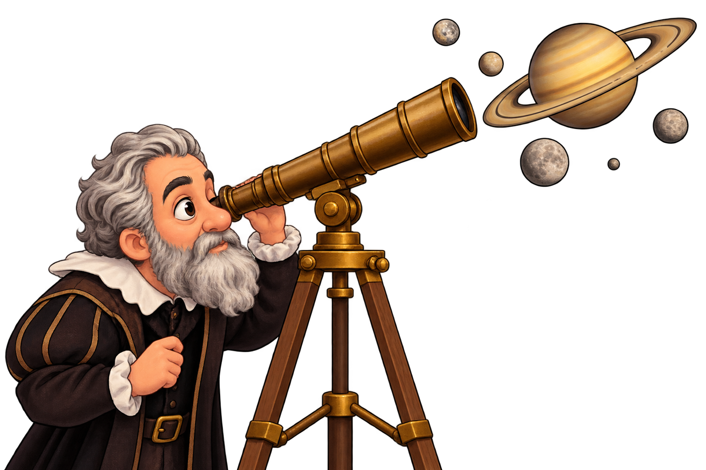

Cuenta la historia que Galileo Galilei se atrevió a mirar más allá de las estrellas. Siglos después, su curiosidad seguiría viajando por el universo, esta vez a bordo de una pequeña exploradora llamada Cassini.